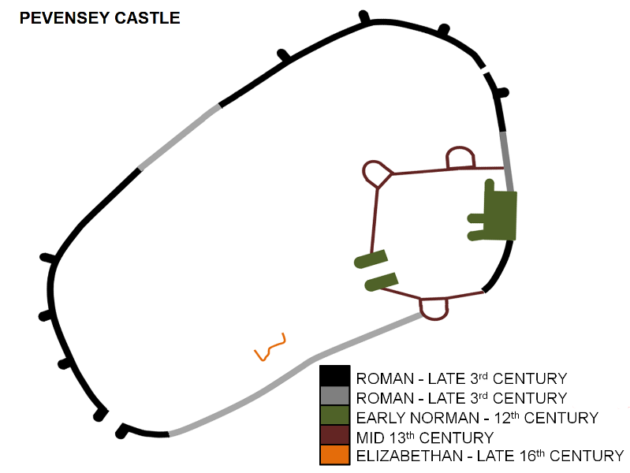
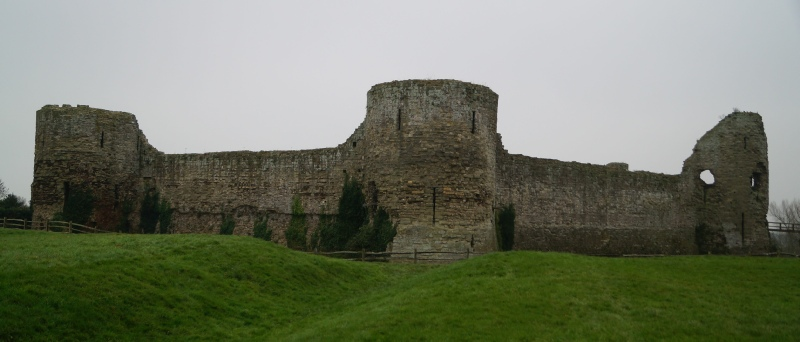
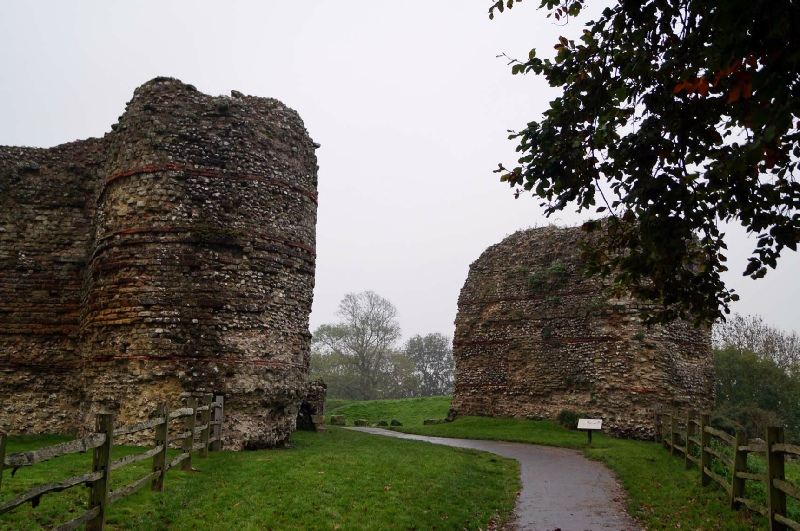

PEVENSEY CASTLE, BN24 5LE
GETTING THERE
Postcode: Castle Lane, BN24 5LE
Lat/Long: 50.8192N 0.3342E
Notes: The castle is a major tourist attraction and is well sign-posted. A pay and display car park is immediately adjacent to the castle.
WHAT IS THERE TO SEE?
The extensive remains of a Roman Saxon Shore fort in an unusual configuration. Both the West Gate and many of the curtain wall Towers remain standing to an impressive height. Also visible are the ruins of the medieval castle and WWII defences built into the fabric of the fortification.
VISIT OFFICIAL SITE (Opens in new window)
Castle is managed by English Heritage .
ADDITIONAL NOTES
1. The Notitia Dignitatum lists nine forts under the command of the Count of the Saxon Shore. Three of the forts were constructed early in the third century AD - Brancaster, Caister and Reculver - and confirmed to traditional Roman military design, i.e. based on a 'playing card' shape. The reminder were constructed in the latter part of the third century and were defined by thicker/taller walls, semi-circular bastions and irregular layouts. The forts of the latter group were: Bradwell, Burgh , Dover , Lympne , Pevensey, Portchester and Richborough .
2. Carausius, who built the Roman fort that later became Pevensey Castle, was appointed as commander of the British Roman Navy, the Classis Britannica . However he was accused of corruption and Emperor Maximian ordered his execution; Carausius responded by declaring himself Emperor of Britain and Northern Gaul.
3. The Normans divided Sussex into six areas known as Rapes each protected and controlled by a castle. From west to east:
- Chichester : Roger de Montgomery
- Arundel : Roger de Montgomery
- Bramber : William de Braose
- Lewes : William de Warenne
- Pevensey: Robert, Count of Mortain
- Hastings : Robert, Count of Eu
4. Thomas Becket, later Archbishop of Canterbury, spent sometime at Pevensey Castle due to his association with Richer de l'Aigle. The Norman aristocrat exposed him hawking and hunting giving him an appetite for pleasures far beyond the means of a Merchant's son.
5. Several notably prisoners were held at Pevensey. Henry V incarcerated both King James I of Scotland, who had been captured in 1406, and Queen Joan of Navarre at the castle.
Pevensey Castle Layout. As can be seen from the diagram above, the configuration of the Roman fort was unusual with the shape being altered to fit the peninsula on which it was built.
Originally a Roman Fort that formed part of the Saxon Shore Command, Pevensey Castle earned a place in history when Duke William of Normandy landed nearby in 1066 and occupied the ruins. Later modified into a major Medieval fortress, it was besieged three times.
HISTORY OF PEVENSEY CASTLE
Pevensey Castle was initially established by the Romans as a fort called Anderitum . Built between AD 280-300 it was constructed by Carausius, an individual who had been appointed to command the Classis Britannica (the Roman fleet based in the English Channel) and to eliminate the threat of Frankish and Saxon pirates. Like other late third century forts, it differed from the traditional standard rectangular 'playing card' configuration associated with Roman military outposts and was instead adapted into an oval shape to fit the terrain on which it was positioned. The fourth century document detailing Roman military dispositions, the Notitia Dignitatum , noted the fort housed forces under the command of the Count of the Saxon Shore; a dedicated military command of the late Roman empire that protected southern England from Saxon raiders. It is probable the fort acted as a supply base for the Classis Britannia .
The Roman Army had withdrawn from Britain by the early fifth century but the fort continued in use by a small community who sheltered with its walls. However, according to the Anglo-Saxon Chronicle, the fort was attacked in AD 491 by a Saxon forced under Ælle who exterminated the inhabitants.
During the Summer of 1066, the forces of Harold II camped at Pevensey whilst they waited for the arrival of Duke William of Normandy. However, by the time William landed on 29 September 1066, Harold's forces had been re-deployed north to deal with the invasion of Harald Hardrada, King of Norway. William immediately set about securing a beachhead at Pevensey and augmented the Roman defences with a number of dry ditches before moving onto establish Hastings Castle and then advanced inland to fight the definitive Battle of Hastings . Thereafter he divided Sussex into a number of 'rapes' which he granted to key supporters. Pevensey was given to his half-brother Robert, Count of Mortain who repaired and enhanced the Roman circuit wall and created an Inner Bailey protected by an earth and timber wall.
Following the death of William I in 1087, Robert joined various other Norman magnates in a rebellion. William I had died leaving three male children; Robert Duke of Normandy, William Rufus (crowned as William II of England) and Henry (later King Henry I of England). Pevensey was held by Odo, Bishop of Bayeux - brother to Robert, Earl of Mortain – who supported the claim of Robert, Duke of Normandy. The castle only surrendered after a six week siege from land and sea that was personally supervised by William II. Odo was imprisoned for life but Robert, Earl of Mortain was allowed to keep Pevensey. He made some further modifications to the castle - most notably adding the Great Keep around 1100 - but when his son rebelled in 1102 it was confiscated and the Rape of Pevensey granted to Gilbert de l'Aigle (although the castle itself was seemingly retained in Royal hands at this time).
During the Anarchy (the civil war that followed the death of Henry I and dispute over whether his daughter, Matilda, or nephew, Stephen, should rule), the l'Aigle family lost their possessions; King Stephen granted the castle and Rape to Gilbert de Clare, Earl of Pembroke. In 1147 he rebelled and declared for Matilda. The King besieged Pevensey starving the garrison to surrender thereafter retaining it in Royal ownership for the next eighty years. It was held for the King during the first Baron's War refusing to surrender to the forces of Prince Louis of France.
In the 1230s the castle was briefly granted to Gilbert Marshall, Earl of Pembroke, before being granted to Peter of Savoy. He seems to have commissioned the rebuilding of the timber palisade around the medieval Keep in stone. The upgrade was timely as the castle saw action during the second Barons Wars when, following the Royalist defeat at the Battle of Lewes (1264) , retreating forces sheltered within; the castle was besieged by Simon de Montfort but was not taken.
In 1372 the castle was granted to John of Gaunt. His forces successfully defended the area against a French attack in 1377 but when his son Henry Bolingbroke illegally returned from exile, the garrison of Pevensey Castle (led by Sir John Pelham) joined the 1399 rebellion against Richard II. The castle was attacked by local forces loyal to the King but it was repulsed and just weeks later Henry has been crowned King and Richard II had abdicated and been led away to imprisonment and probable murder at Pontefract Castle .
The castle played no part in the Wars of the Roses and was allowed to fall into decay and ruin. Emergency measures were taken in 1587, due to fears of Spanish invasion, but thereafter it was again neglected. The final upgrades were made during World War II when the post-Dunkirk invasion fears prompted the old structure to be upgraded again; a number of machine gun pillboxes were seamlessly built into the fabric of the castle whilst concurrently the castle grounds were utilised as a training ground for the home guard.
© Copyright 2016 | Terms and Conditions (inc Cookie Policy) | Contact Us
Recovered original photographs, plans and images


